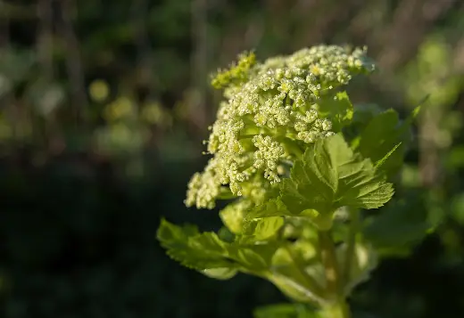

Alexanders
Alexanders is a wild green you can forage from January to April in South East England, South West England, Wales and Midlands and East. Glossy, bright green plant of coasts, lanes and old castle walls with leaves in threes and yellow-green flower domes in spring; smells of celery and myrrh.

When is alexanders in season in the UK?
Alexanders is usually in season January to April. Timing shifts with weather, latitude and altitude.
Where does alexanders grow in the UK?
Alexanders grows in East Midlands, East of England, London, South East England, South West England, Wales, West Midlands. Regions: South East England, South West England, Wales, Midlands and East.
How do you recognise alexanders?
Glossy, bright green plant of coasts, lanes and old castle walls with leaves in threes and yellow-green flower domes in spring; smells of celery and myrrh.
How do you harvest alexanders?
Pinch off young tips and top leaves before the plant flowers, when they are tender and mild. Leave the roots and lower leaves so it regrows. Pick away from roads, sprayed verges and dog-walking paths.
How do you eat alexanders?
Young stems peeled and steamed like asparagus; leaves in soups; buds like broccoli; black seeds as pepper.
How do you store alexanders?
Blanch and freeze stems; dry seeds.
What can be confused with alexanders?
Hemlock (Conium maculatum), rated deadly. Elder is a woody shrub; hemlock is a soft plant with hollow stems. Hemlock stems are smooth with purple blotches and smell mousy. Ground elder has leaves in threes on a triangular, unspotted stem.
What is alexanders good for?
Vitamin A, Vitamin C.
What can you cook with alexanders?
- Steamed alexanders with butter: Peeled young stems steamed and buttered like asparagus.